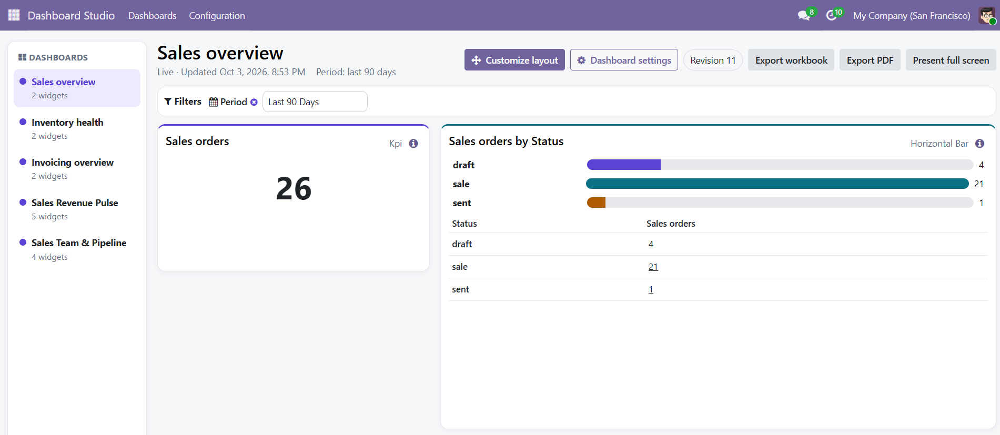
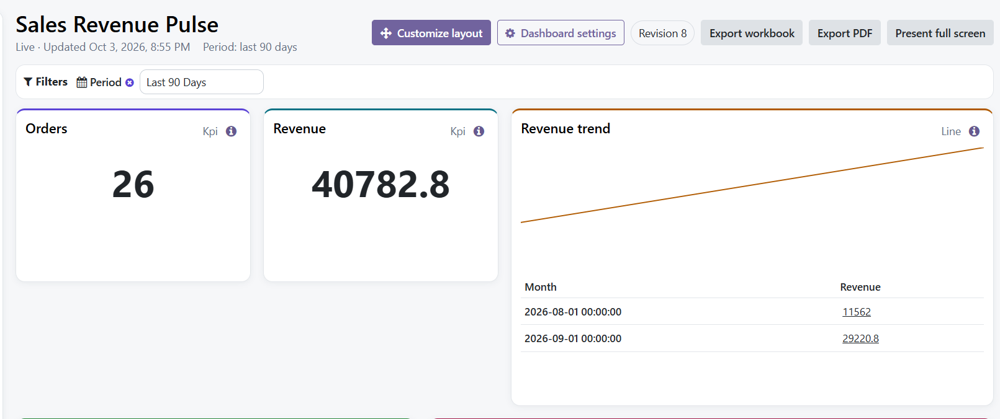
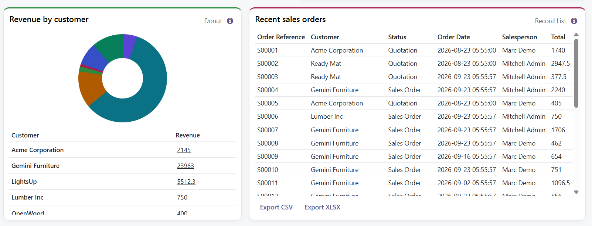
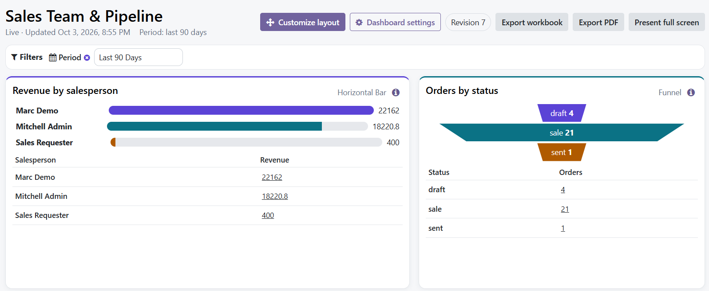
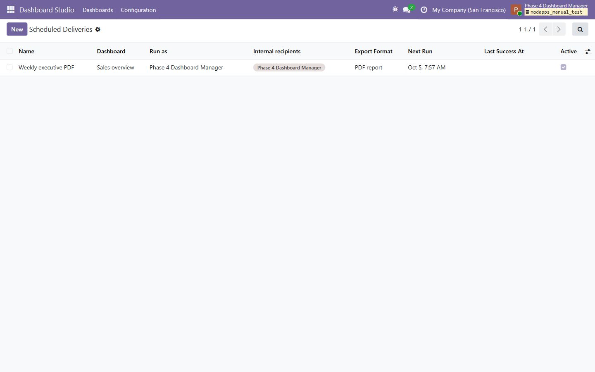

Overview
Dashboard Studio adds an operational dashboard builder to Odoo. Designers create reusable datasets, measures and widgets. Viewers open shared dashboards from the dashboard library and see results calculated under their own Odoo permissions.

For viewers
Open shared dashboards, apply filters, inspect permitted source records and export current results.
For designers
Create queries and widgets, preview results, arrange layouts, validate definitions and control sharing.
Requirements
| Item | Requirement |
|---|---|
| Odoo | Odoo 18 or 19, Community or Enterprise; install the branch matching your Odoo major version |
| Hosting | Odoo.sh or self-hosted Odoo with support for custom add-ons |
| Odoo dependencies | base, web and mail |
| Python dependencies | xlsxwriter for workbook export and reportlab for scheduled PDF reports |
| Browser | A current desktop browser; responsive viewing is supported on smaller screens |
Optional dashboard templates appear only when their related Odoo application is installed. Dashboard Studio does not require Sales, Purchase, Inventory or Accounting by default.
Installation
- Place the
modapps_insight_studiofolder in an Odoo add-ons path. - Install the Python packages
xlsxwriterandreportlabin the same environment used by Odoo. - Restart Odoo and update the Apps list.
- Search for ModApps Dashboard Studio and select Activate.
- Assign Dashboard Studio roles before asking users to open the application.
modapps_insight_studio from Apps or the Odoo command line.Roles and access
| Role | Intended use |
|---|---|
| Viewer | Open dashboards shared with the user or one of the user's groups. Apply filters, drill into permitted records and export current results. |
| Designer | Create and edit dashboard definitions, datasets, measures, widgets and layouts. Validate work before it is shared. |
| Manager | Manage configuration, templates, broader sharing policy and scheduled internal deliveries. Intended for trusted functional administrators. |
Assign the smallest role needed. A Dashboard Studio role controls access to the builder; it does not grant access to Sales, Accounting, contacts or any other underlying business record.
Build a dashboard
- Open Dashboard Studio → Dashboards and create a dashboard.
- Set its name, owner and optional company boundary.
- Create a dataset from a guided Odoo model or a validated custom query.
- Add measures and dimensions with clear business labels.
- Add widgets and use the preview before saving each widget.
- Open the dashboard, choose Customize layout, then move and resize cards.
- Validate the dashboard and define its users or groups.

Validated custom queries
The custom query builder is structured. It does not accept arbitrary SQL. Choose a permitted model, add stored fields one by one, define compatible aggregates and add typed conditions. The server validates the definition and runs a bounded preview before it can be used by a widget.
Recommended sequence
- Choose the root model that owns the records you need.
- Add only fields required by the dashboard.
- Give every measure a descriptive title such as “Untaxed Revenue” or “Confirmed Orders.”
- Add grouping fields for charts and tables.
- Use the preview to verify labels, values and record scope.
- Save, then select the resulting dataset when configuring a widget.
Widgets and layout
Dashboard Studio includes KPI, gauge, horizontal bar, vertical bar, stacked bar, line, area, pie, donut, funnel, pivot and record-list widgets. Available measure and dimension fields are filtered to the widget's selected dataset.

Use Customize layout to drag cards by their header and resize them from the lower-right handle. Select Edit on a card to change its query, measure, dimensions, type or display options without leaving the dashboard.
Filters
Dashboard filters apply one value across compatible widgets. Date ranges can use a preset such as This Month or Last 90 Days, or a custom from/to range. Company filters are shown only where they add a meaningful choice for the current user and dashboard.
- Clear a filter to return to the dashboard default.
- Filter values are checked against the viewer's permitted companies and records.
- Filters affect on-screen results, drill-through and exports consistently.
Validation and sharing
Validation checks the saved dashboard definition before it is made available to viewers. Resolve invalid fields, incompatible measures, unsafe definitions and preview errors before sharing.
- Run validation after changing a dataset, measure or widget.
- Open the dashboard as a representative viewer and verify its result scope.
- Share with named users or groups.
- Confirm the dashboard appears in the viewer's dashboard library.

Security model
Interactive dashboard results run under the current user's Odoo environment. ACLs, record rules, allowed companies, field groups, language and timezone remain active.
- No arbitrary SQL, Python, JavaScript,
safe_evalor browser-supplied domains. - Preview, live results, drill-through and exports use the same permission-aware query path.
- Cache entries are separated by user and access context.
- Exports rerun current queries instead of trusting values already rendered in the browser.
- Scheduled exports run under their saved internal execution user and fail closed if that access is revoked.
- Sharing a dashboard does not share the underlying Odoo records.
Exports
Export workbook creates an XLSX file from current dashboard results. Export PDF creates a print-oriented dashboard view. Record-list widgets can also expose table-specific CSV or XLSX export when detailed rows are the useful deliverable.
Apply the intended filters before exporting. Exported data follows the current viewer's record and company access.
Scheduled delivery
Insight Managers can open Dashboard Studio → Configuration → Scheduled Deliveries to send a validated dashboard as PDF or XLSX to selected internal Odoo users.

- Choose the dashboard.
- Select an explicit Run as user who is active, internal, has Insight Viewer access and can open that dashboard.
- Add active internal recipients with email addresses.
- Select PDF or XLSX, set the interval and next run, then save.
- Use Send now to validate the complete delivery before relying on the schedule.
Scheduled delivery is intentionally limited to internal Odoo users. Portal recipients, arbitrary email addresses, public links and external report storage are not supported.
Troubleshooting
| Symptom | Check |
|---|---|
| Dashboard is not listed | Confirm it is active, validated and shared with the current user or one of the user's groups. |
| No permitted records | Clear filters, verify allowed companies, then confirm the user can open the same source records in the standard Odoo application. |
| Measure cannot be selected | Confirm the measure belongs to the widget's selected dataset and uses a calculation compatible with the field type. |
| Workbook export fails | Confirm xlsxwriter is installed in the Odoo Python environment and restart Odoo after installation. |
| Scheduled delivery fails | Confirm the execution user is still active and internal, can open the dashboard, and retains access to its source data. Confirm recipients are active internal users with email addresses. PDF output also requires reportlab. |
| Results differ between users | This is expected when their ACLs, record rules, companies, language or timezone differ. |
Frequently asked questions
Does Dashboard Studio accept SQL?
No. Its custom query builder saves structured model, field, aggregate, operator and typed-value records. Arbitrary SQL and executable query text are outside this release.
Why does one user see fewer records?
The user's ACLs, record rules, field groups or allowed companies are narrower. Dashboard Studio does not elevate business-data access.
Who can receive a scheduled report?
Selected active internal Odoo users with email addresses. The saved execution user must also remain active, internal, have Insight Viewer access and be able to open the dashboard.
Does installing Dashboard Studio install Sales or Accounting?
No. Optional templates appear only when their related standard Odoo applications are already installed and compatible.
Changelog
18.0.1.0.1
- Expanded the first marketplace dashboard view to demonstrate KPI, chart, funnel and table capability.
- Kept widget cards stationary with restrained shadows and permission-scoped KPI drill-through.
18.0.1.0.0
- Added the first supported Odoo 18 Community and Enterprise release.
- Preserved the dashboard builder, widget set, permission model, exports and scheduled delivery workflow.
19.0.1.9.3
- Expanded the first marketplace dashboard view to demonstrate the broader widget set.
- Kept genuine locally captured screens and the existing security model.
19.0.1.9.2
- Removed widget-card hover movement and reduced shadow intensity.
- Kept KPI drill-through actionable and permission-scoped.
19.0.1.8.0
- Added manager-controlled scheduled PDF and XLSX delivery to selected internal Odoo users.
- Added an explicit saved execution identity with fresh permission-scoped queries and fail-closed access revocation.
- Added manager run status, bounded errors and a Send now validation action.
The packaged module includes the complete release history in doc/changelog.rst.
Support
For a useful first response, include:
- Odoo edition and exact version
- Hosting type
- Dashboard and widget names
- User role and allowed companies
- Steps to reproduce
- The visible error text and relevant Odoo server log excerpt, with secrets removed
Email info@modapps.dev. ModApps targets an initial response within one business day. This is a response target, not a guaranteed resolution time.
Do not send database passwords, API keys, session cookies or full database backups by email.